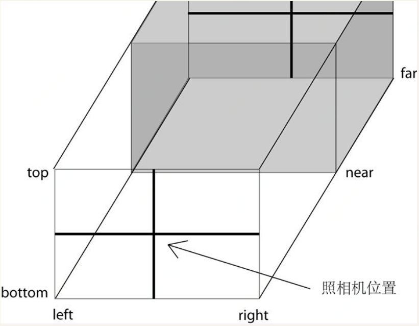

使用透视投影照相机获得的结果是类似人眼在真实世界中看到的有“近大远小”的效果（如下图中的(a)）；
而使用正交投影照相机获得的结果就像我们在数学几何学课上老师教我们画的效果，对于在三维空间内平行的线，
投影到二维空间中也一定是平行的
建模软件通常使用正交投影，这样不会因为投影而改变物体比例；
而对于其他大多数应用，通常使用透视投影，因为这更接近人眼的观察效果。
这六个参数分别代表正交投影照相机拍摄到的空间的六个面的位置，这六个面围成一个长方体，我们称其为视景体（Frustum）。
只有在视景体内部（下图中的灰色部分）的物体才可能显示在屏幕上，而视景体外的物体会在显示之前被裁减掉

为了保持照相机的横竖比例，需要保证(right - left)与(top - bottom)的比例与Canvas宽度与高度的比例一致
透视图中，灰色的部分是视景体，是可能被渲染的物体所在的区域。fov是视景体竖直方向上的张角（是角度制而非弧度制），
如侧视图所示。aspect等于width / height，是照相机水平方向和竖直方向长度的比值，通常设为Canvas的横纵比例。
near和far分别是照相机到视景体最近、最远的距离，均为正值，且far应大于near。